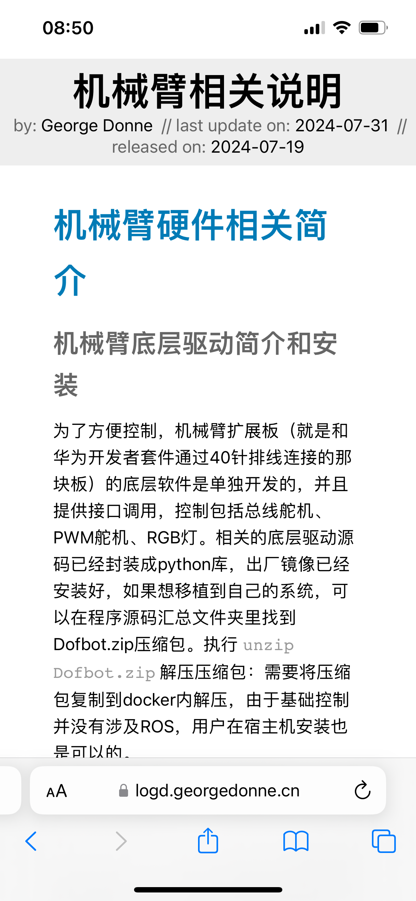
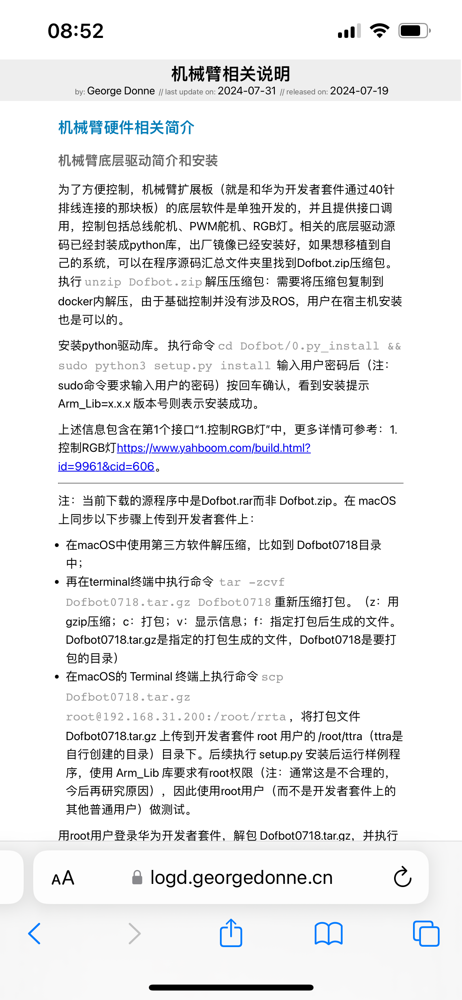

待优化事项
- 待迁移Jekyll & Minimal Mistakes 个人网站。url：https://georgedonne.github.io/log/
- code使用google noto字体。--240718
- 实现侧边栏，用于文档目录。--240718
- 实现面包屑。--240718
- 实现站内搜索。--240718
- 一些属性（作者/发布日期/更新日期/收录日期/……）,在 html 怎么表示比较好，在 css 怎么渲染比较好。--240809
已基本完成事项
- 实现手机适配。例如字大一些等。--240718 // 240803：已基本完成。更多详情可参考 个人网站实现手机适配
个人网站实现手机适配
期望在手机上浏览网站时，如下左图的效果，而不是如下右图的效果。当然也可以横屏观看，字就会自动大一些，也可以适合阅读的。右图竖屏观看可以放大些，但需要左右滚动，也是不方便。
 只要在每个 html 文件的头部即 <head></head> 加入如下 <meta name="viewport" ... >
即可。
<head>
<!-- 其他元素 -->
<meta name="viewport" content="width=device-width, user-scalable=no, initial-scale=1.0, maximum-scale=1.0, minimum-scale=1.0">
<!-- 其他元素 -->
</head>
有兴趣的读者可以参考如下链接，了解相关原理：
- viewports剖析，fedev.cn，约2014年。文中的一些图不可用了，可以参考文中的 2 个英文原文链接。
- A tale of two viewports — part one，《viewports剖析》所引用的英文链接1。
- A tale of two viewports — part two，《viewports剖析》所引用的英文链接2。
- MDN（Mozilla Developer Network）的相关解释也不错。请读者自行搜索，在此就不列链接了。
其他说明和参考信息：
- 学习了相关知识后，觉得是否此种简短模式
<meta name="viewport" content="width=device-width, initial-scale=1.0">就够了可以了，而且也有网站也是这么建议的。经测试，简短模式效果不是很理想了，最终还是先采用了完整模式<meta name="viewport" content="width=device-width, user-scalable=no, initial-scale=1.0, maximum-scale=1.0, minimum-scale=1.0">。 - 调试期间发现加了
<meta name="viewport" ... >还是没有达到预期效果。 - 在 PC 的 Chrome 浏览器调试（在开发者模式下选取手机比如 iphone14 Pro Max），和一些网站（比如 huaweicloud.com）做比对。发现别人网站的 body 宽度是 430，我的是 640。
- 进一步检查。发现 body 的父元素 html 的宽度是期望的 430。查看 css ，发现 body 相关的设置了 min-width: 640px。
- 将 body 的 min-width:640px 修改为 320px，问题解决！
- 在 PC + Chrome 浏览器、iPhone + Safari 浏览器上查看，效果还 OK。尚未在其他终端 + 相关浏览器做验证。
网站访问量计数--静态网站
拟实现以下功能：
- 网站的访客数统计
- 网站的访问量统计
- 某个页面/文章的访问量统计
采用“不蒜子”计数，链接：https://ibruce.info/2015/04/04/busuanzi/
- 算法a：pv（Page View）的方式，单个用户连续点击n篇文章，记录n次访问量。
- 算法b：uv（Unique Visitor）的方式，单个用户连续点击n篇文章，只记录1次访客数。
PV 和 UV 的含义，可参考：详解PV、UV、VV、IP及其关系与计算
相关代码如下：
<!-- 在 head 中引入不蒜子计数 -->
<script async src="//busuanzi.ibruce.info/busuanzi/2.3/busuanzi.pure.mini.js"></script>
<!-- 在网页的 body 的 header 中显示访问数量 -->
<section>
<span id="busuanzi_container_page_pv">
浏览量：<span id="busuanzi_value_page_pv"></span>👀
</span>
</section>
<!-- 在网页的 body 的 footer 中，显示网站的访客数和访问数量 -->
<p>
<span id="busuanzi_container_site_pv">
本站浏览量：<span id="busuanzi_value_site_pv"></span>👀
</span>
|
<span id="busuanzi_container_site_uv">
本站访客数：<span id="busuanzi_value_site_uv"></span>👤
</span>
</p>遗留问题：
- 用移动 5G 访问网站，每刷新一次页面，除了浏览量按预期的增加 1 以外，访客数也会加 1（期望是不变）。//240830